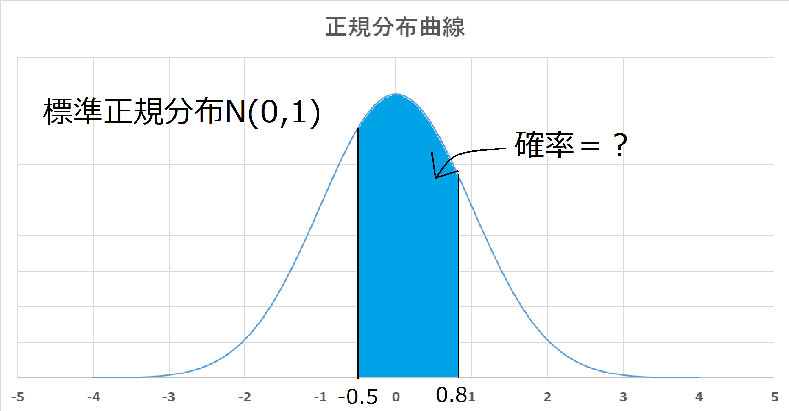
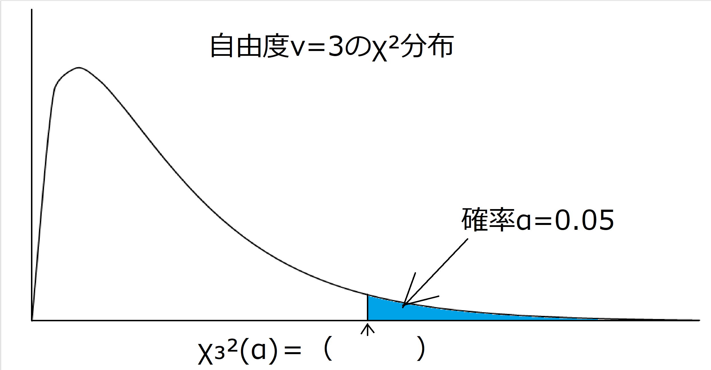
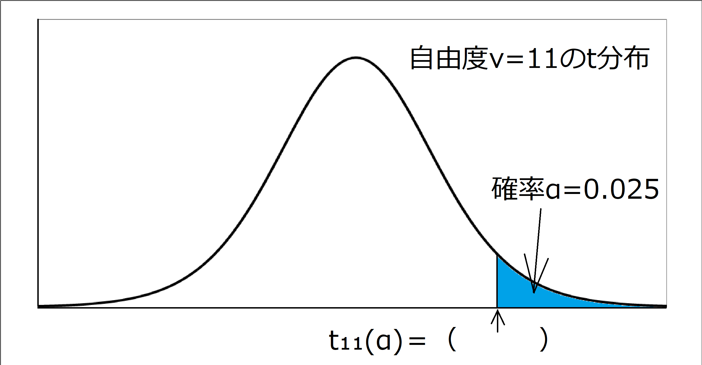
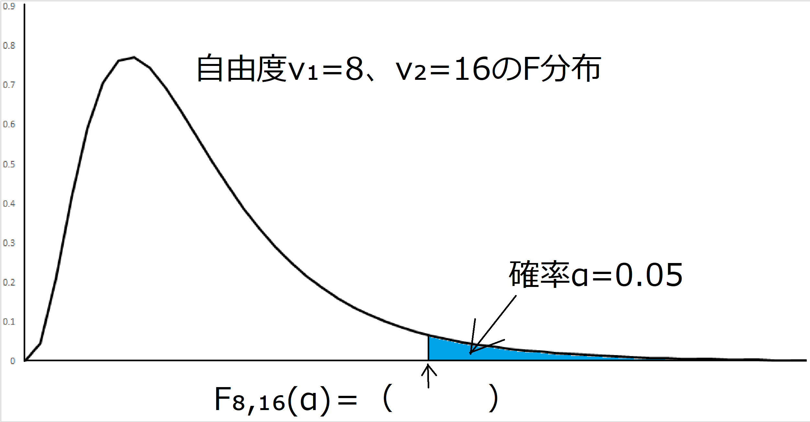

患者さんの在院日数のデータが8名分ある。
10，8，12，11，12，13，6，12（単位：日）
このデータについて次の統計量を求めよ。データはサンプルデータと見なす。
1）平均値（mean）
2）中央値（median）
3）最頻値（mode）
4）分散（variance）
5）標準偏差（standard deviation SD）
1）下記の標準正規分布で塗りつぶされた部分の確率を求めよ。

2）68,721が受験した第244回（2019年10月）TOEIC（990点満点）の成績が、
平均597.5点、標準偏差174.6であった。
得点が正規分布に近い分布をしていると仮定して、以下の問いに答えよ。
ア）800点以上の受験者は何人ぐらいいると考えられるか？
イ）上位1000番目以内に入るためには何点以上あればよいか？
下記の各分布について、（ ）の数値を表を利用して求めよ。
  あるフィットネスクラブで48人の会員データを抽出した。ダイエット前後の体重を調べたら次の通りであった。
ダイエット前－ダイエット後の
平均 ：0.85[kg]
標準偏差：2.21[kg]
ダイエット前後で体重に差があると言えるか？有意水準5%で検定しなさい。
新薬の効果を調べるため200人に対して治験を行い次表の結果を得た。
新薬に効果があると言えるか？有意水準1%で検定しなさい。
| 効果あり | 効果なし | |
|---|---|---|
| 新薬投与 | 70 | 50 |
| 偽薬投与 | 35 | 45 |
解答は こちら
トップページへ